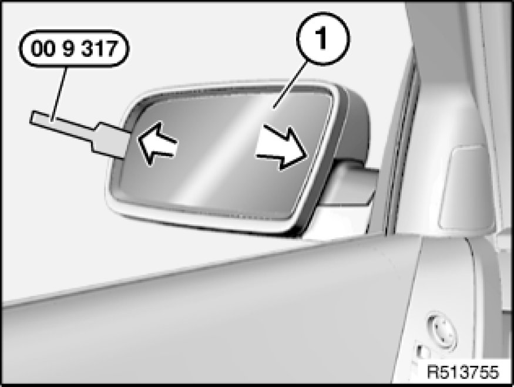
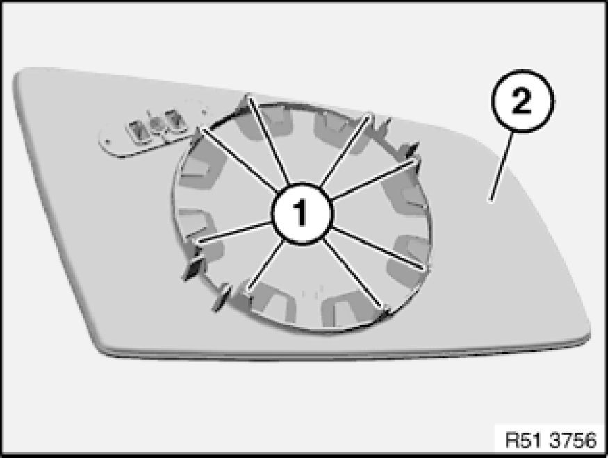

Replacing Mirror Glass
51 16 026 - Replacing mirror glass

Special tools required:
- 00 9 317 00 9 317 Trim Panel Wedge

Warning!
Risk of injury!
Move mirror glass with hand carefully and slowly.
If mirror glass is damaged:
Wear protective goggles and cut-proof gloves.
Risk of injury by flaking-off glass splinters.

Important!
Risk of damage!
Bring door mirror to room temperature to prevent catches from breaking off.

Important!
Risk of damage!
Secure mirror glass (1) against falling out.
Press mirror glass (1) on side vehicle by hand to full extent.
Unclip mirror glass (1) from outer side with special tool 00 9 317 00 9 317 Trim Panel Wedge all round.
Unlock and disconnect associated plug connections, remove mirror glass (1).

Installation Note:
Retaining lugs (1) must not be damaged.
Fit mirror glass (2) with retaining lugs (1) flush on mirror adjusting drive and clip into place.
Ensure correct locking.
Make sure mirror adjusting drive functions correctly.